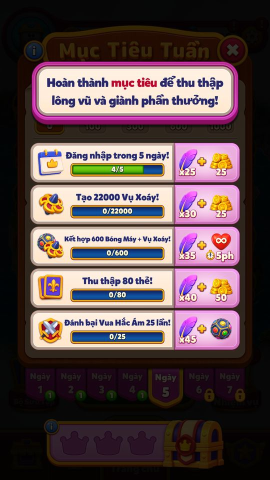
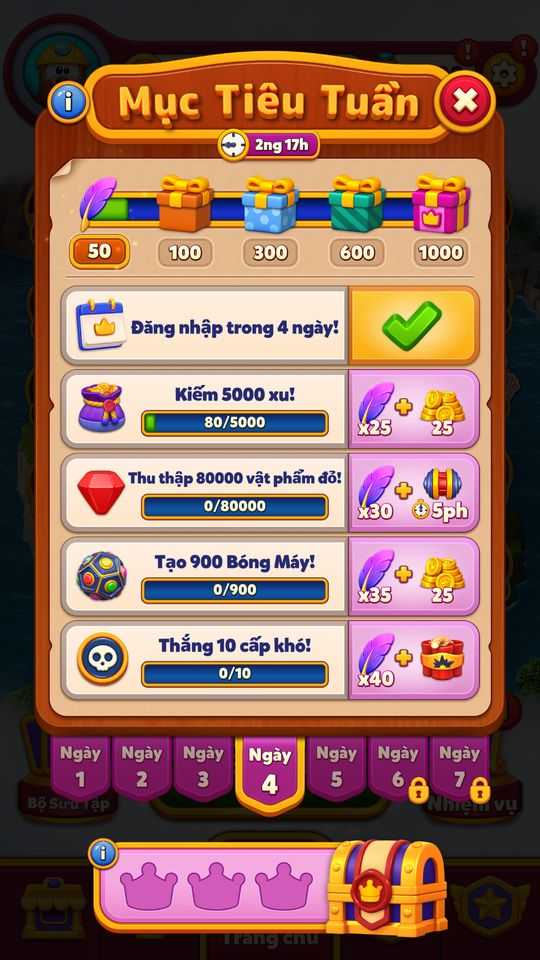
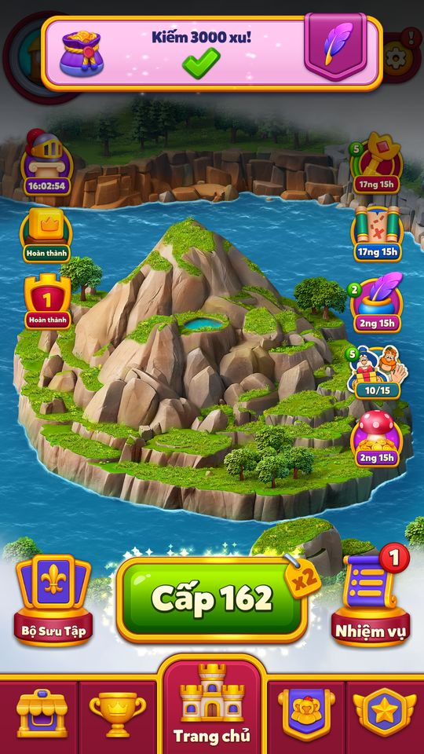
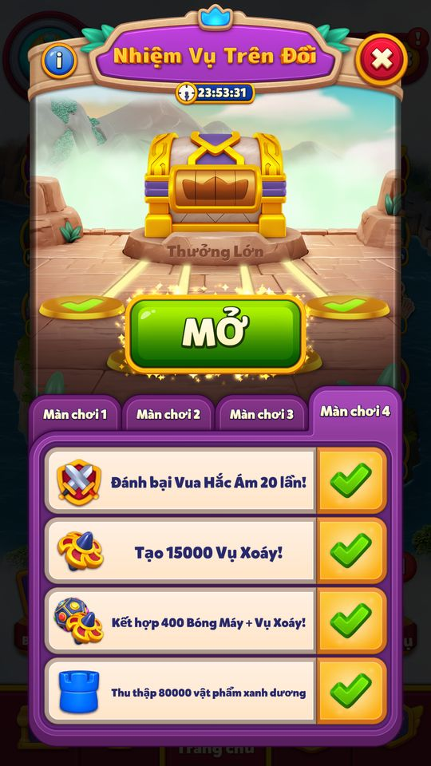
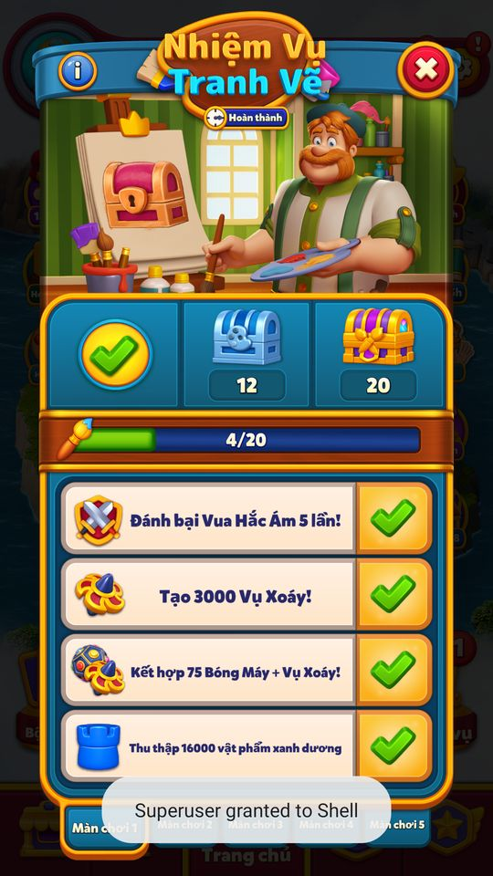
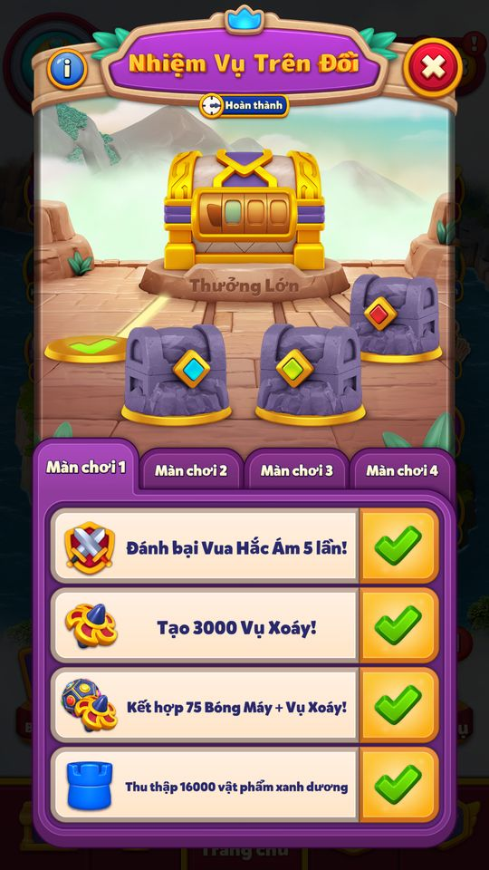
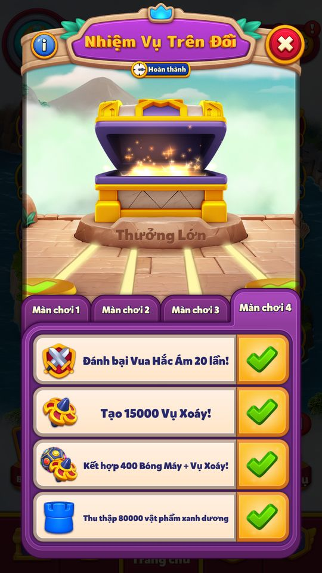

Khung event nhiệm vụ
Khung chung cho các event 'nhiệm vụ' (MissionEventType: HillQuest 0, CanvasQuest 1, WeeklyMission 2).
Mô tả
- Khung chung cho các event 'nhiệm vụ' (MissionEventType: HillQuest 0, CanvasQuest 1, WeeklyMission 2).
- Mỗi event có nhiều chặng (stage), mỗi chặng một số nhiệm vụ (task) được chọn từ danh sách 36 loại MissionTaskId: thắng level (thường/khó/siêu khó/kingdom/dark/attack/lần đầu), tạo item đặc biệt, làm combo, thu thập item màu, kiếm coin, làm district task, thu thẻ, tiến độ ở event khác (Cube Blast, Magic Carnival, Blitz, Diamond Rush, Hidden Path, Pearls of Atlantis, Arena), đăng nhập, mua IAP.
- MissionTaskManager theo dõi tiến độ sau mỗi level thắng và từ các hệ thống khác; task đạt mục tiêu chuyển sang 'claimable', người chơi bấm nhận (hoặc tự nhận khi mở dialog) để lấy vật phẩm thu thập (pickaxe, brush, quill) và mở rương.
- Khung lo việc chọn task (primary → alternative → fallback), thay task không hợp lệ, thông báo trong game, auto-claim, tutorial động và đồng bộ với Medal Missions.
Thiết kế chi tiết
Tóm tắt thiết kế
Code Một khung code (AMissionEventManager + MissionTaskManager) chạy cả ba event nhiệm vụ: Hill Quest (4 chặng × 4 task, pickaxe), Canvas Quest (5 × 4, brush) và Weekly Goals (7 ngày × 5, quill). Cả ba mở từ level 101 và chung một slot icon (priority 45 / 47 / 48), nên mỗi lúc chỉ một event chạy.
Code Task lấy từ danh mục 36 loại: thắng màn (thường / lần đầu / Hard / Super Hard / Kingdom / Dark / Attack), tạo item đặc biệt, combo, gom item màu, kiếm coin, làm district task, thu thẻ, và tiến độ ở event khác (Cube Blast, Magic Carnival, Blitz, Diamond Rush, Hidden Path, Pearls of Atlantis, Arena). Weekly còn có đăng nhập theo ngày và mua IAP.
Code Khi vào event, client tự chọn task: thử primary, bị loại thì sang altIds, rồi tới fallbacks. Có 14 lý do loại, ví dụ thiếu level, event phụ thuộc không chạy trước khi mission hết hạn, chưa tải bundle, trùng danh mục, cửa hàng Nga với task IAP. Task giữa chừng hết hợp lệ thì được thay (TryToReplaceInvalidTasks).
Code Tiến độ nhân hệ số độ khó: item màu và combo × GetMultiplierForLevel (Hard ×2, Super Hard ×5…). Lượt dư cuối màn tính thêm 10 item mỗi màu cho mỗi lượt × hệ số. Đạt mục tiêu thì task thành Claimable và ghi early credit cho Medal Missions.
Code Mở màn hình là tự nhận mọi task và rương sẵn có (auto-claim). Hết giờ mà còn thưởng chưa nhận thì event vẫn mở để nhận nốt, sau đó mới đóng. Push nhắc sắp hết: Hill / Canvas Quest 23 giờ trước, Weekly Goals 71 giờ trước.
Luồng người chơi từng bước
- Server gửi eventServerCodeMỗi event có EventInfo riêng (HillQuest / CanvasQuest / WeeklyMissionEventInfo) với config gồm
taskData(tasks {id, targets.t[], altIds}, fallbacks),invalidTasks,steps(rương). Hill/Canvas có thêmprimaryTasks; Weekly có primaryTasks theo ngày. - Vào eventClientCode
get_CanEnterEvent: level ≥ 101, không bị backend tắt, AB bật (Weekly có AB 111/112), bundlemission_commonvà bundle riêng đã tải. Chưa đủ level thì vẫn ghi EventId nhưng đặt IsEventValid = false (TryEnterEventForInsufficientLevel). Nhận định Nhờ vậy người vừa lên level 101 giữa kỳ không bị vào một kỳ đã chạy dở. - Chọn taskClientCode
TrySelectTasktheo SelectionPhase Primary → Alternative → Fallback.EvaluateTaskForSelectionloại task: không có target dương, đã chọn, danh mục bị chặn, event phụ thuộc không bắt đầu trước khi mission kết thúc, bundle chưa tải (thử lại, có giới hạn). Bỏ task Kingdom nếu người chơi bypass kingdom, bỏ task IAP nếu là store Nga. Kết quả gửiMissionTaskSelectionResult. - Icon + tutorialGiao diệnCodeLần đầu có tutorial icon, sau đó tutorial dialog (bit 16) và tutorial động chỉ cách nhận task (bit 17). Kết quả tutorial động được ghi lại: SelfClaim / AutoClaim / StageChanged / ScreenClosed / InfoOpened.
- Thắng màn → tiến độClientCode
SetWinLevelTaskProgressAmounts: WinLevel +1, Hard / Super Hard / Attack / Kingdom / Dark +1 theo loại màn, WinLevelOnFirstTry nếu thắng ngay lần đầu. Item màu (Blue / Green / Yellow / Red) và combo được nhân hệ số màn. Lượt dư: +leftMoves × hệ số × 10 cho mỗi task màu; Spinner / Rocket / Dynamite / ElectroBall nổ ra từ lượt dư được tính vào task tạo item. - Tiến độ từ hệ thống khácClientCodeCube Blast xong chặng → task 28, Magic Carnival → 29, district task → 26, coin → 25, thẻ → 27, Blitz 18/19, Diamond Rush 23/24, Hidden Path 30, Pearls of Atlantis 31, Arena 32; Weekly: đăng nhập theo ngày server (34), mua IAP (35).
- Banner tiến độGiao diệnCode
MissionNotificationManagerđẩy banner “task +x” lên Home sau trận (view riêng cho từng event: pickaxe / brush / quill). Mua hàng và đăng nhập có banner chờ riêng. - Nhận task / rươngNgười chơiCodeĐạt target thì task Claimable (trạng thái 2 bit: InProgress 0 / Claimable 1 / Claimed 2). Bấm Claim (
ClaimTask, SelfClaim) hoặc mở màn hình để auto-claim: nhận vật phẩm thu thập, rồiTryClaimStageChestkhi đủ điều kiện rương. - Thay task không còn hợp lệClientCodeServer gửi
invalidTasks, hoặc event phụ thuộc kết thúc:TryToReplaceInvalidTaskschọn task mới (MakingSelectionForReplacement), tiêu một TaskInvalidationSlot (bit 18–24), gửi lại SelectionResult kèm event gây ra việc thay. - Hết giờ / hoàn thànhClientCodeXong mọi chặng thì
CompleteEvent('…AllStagesCompleted'), MissionFinish status 1. Hết giờ (< 100 ms): còn thưởng thì giữ ở trạng thái finish và đẩy dialog nhận; không thìEnterLastSession. MissionFinish status 2. - Audit13/11 — bằng chứng từ các event dùng chung khungtesterPlaytestCodeWeeklyMission cache708/segment4: client tự chọn task khi eventId thử35 được đưa vào. Canvas/Hill dùng config dựng với taskData từcache708; không coi là config server thật. Nhận3000xu từ TeamClash kích hoạt thông báo Weekly Goals Kiếm3000xu hoàn tất (EV_TC_rank1_claim). Thưởng login Weekly cũng tăng task kiếm xu80. Chưa bao phủ36task và mọi nguồn event. Canvas/Hill giữ progress tích luỹ của4taskID qua các chặng; Weekly login dùng chung số ngày. Đây là các nhánh đã quan sát, chưa bao phủ mọi chiến lược. Thông báo Weekly Goals khi nhận xu TeamClash đã chụp; chưa thay thế kiểm chứng notification trong level. Canvas20lượt/Hill16lượt nhận bằng ADB; task Claimable do fixture, thao tác claim và cộng vật phẩm/rương là client thật. Weekly login4ngày nhận50lông+
 80xu.
Mở màn còn hạn bình thường không tự nhận4task Claimable. Hết hạn mở icon Canvas/Hill tự nhận4task và rương đủ điều kiện; xem quest_expiry_ledger.json.
Canvas đủ20lượt/3rương, Hill16lượt/4rương+Grand: nhận cuối rồi đóng/restart mấticon, không thưởng lặp. Không đánh đồng Weekly đã hoàn tất35task.
Expiry fixture: Canvas0progress mấticon khôngthưởng; pending task/rương và Hill pending task/Grand giữiconMở, mở tựclaim phần đủđiềukiện, đóng mấticon.
Tutorial vào Canvas/Hill/Weekly đã chụp. Chưa bao phủ tutorial động của36task hoặc mọi bước giới hạn.
Audit13/11: Canvas ByteArray12 taskStart44,stride37,state2bit×5 từbase+7,progress20bit từbase+17; Hill ByteArray11 taskStart30,stride35,state2bit×4 từbase+7,progress20bit từbase+15. Đã đối chiếu snapshot/claim. Chưa có balance Canvas/Hill từ server; còn primary/alternative/fallback,36task gameplay,invalid/replacement,bundlewait,Medalcredit và backenddisable. MissionEvents là khung chung, ảnh dẫn lại từ event con, không phải event thứ24 có UI riêng.
80xu.
Mở màn còn hạn bình thường không tự nhận4task Claimable. Hết hạn mở icon Canvas/Hill tự nhận4task và rương đủ điều kiện; xem quest_expiry_ledger.json.
Canvas đủ20lượt/3rương, Hill16lượt/4rương+Grand: nhận cuối rồi đóng/restart mấticon, không thưởng lặp. Không đánh đồng Weekly đã hoàn tất35task.
Expiry fixture: Canvas0progress mấticon khôngthưởng; pending task/rương và Hill pending task/Grand giữiconMở, mở tựclaim phần đủđiềukiện, đóng mấticon.
Tutorial vào Canvas/Hill/Weekly đã chụp. Chưa bao phủ tutorial động của36task hoặc mọi bước giới hạn.
Audit13/11: Canvas ByteArray12 taskStart44,stride37,state2bit×5 từbase+7,progress20bit từbase+17; Hill ByteArray11 taskStart30,stride35,state2bit×4 từbase+7,progress20bit từbase+15. Đã đối chiếu snapshot/claim. Chưa có balance Canvas/Hill từ server; còn primary/alternative/fallback,36task gameplay,invalid/replacement,bundlewait,Medalcredit và backenddisable. MissionEvents là khung chung, ảnh dẫn lại từ event con, không phải event thứ24 có UI riêng.
Ảnh dẫn lại, không chụp mới: Tutorial thu thập lông vũ; tự mở ngày5, nhiệm vụ đăng nhập4/5. Task selection do client chạy với config708. 
Ảnh dẫn lại, không chụp mới: Nhận đăng nhập ngày4: quill30→50; thưởng25xu. Bốn claim làm coins6679→6759; task kiếm xu tự tiến80. 
Ảnh dẫn lại, không chụp mới: Bấm Nhận:8834→ 11834xu, claimed1. Weekly Goals hiện thông báo nhiệm vụ Kiếm3000xu hoàn tất; có tương tác giữa hai event.
Ảnh dẫn lại, không chụp mới: Đặt4task chặng1 Claimable rồi mở màn: cả4 nút Nhận còn nguyên và tutorial chỉ hàng1. Không tự nhận chỉ vì mở màn bình thường. 
Ảnh dẫn lại, không chụp mới: Nhận đủ4task:4/20, rương1 Mở, tự chọn chặng2; tiến độ5/10,3000/6000,75/160,16000/35000 được giữ, không reset. 
Ảnh dẫn lại, không chụp mới: Nhận đủ16lượt task: rương4 tự phát40xu(6589→6629), bốn tick, cryptex ghép thành vương miện; Grand Prize có nút Mở riêng. 
Ảnh dẫn lại, không chụp mới: Mở icon hết hạn tự nhận cả4task:state1→2,brush0→4, tự nhận rương1 + 10xu (6469→6479),mask0→1. Task các chặng sau vẫn chưa đạt.
Ảnh dẫn lại, không chụp mới: Mở icon hết hạn tự nhận4task chặng1,state1→2 và rương1 + 10xu (6529→6539). Grand vẫn chưa mở; ba chặng sau không đạt.
Ảnh dẫn lại, không chụp mới: Chỉ mở icon hết hạn: Grand Prize tự mở,6629→ 6679xu,grandClaimed0→1; không bấm nút Mở rương riêng.


Ba event dùng chung khung
| Hill Quest | Canvas Quest | Weekly Goals | |
|---|---|---|---|
| LiveopsEventType / MissionEventType | 21 / 0 | 22 / 1 | 31 / 2 |
| Cấu trúc | 4 chặng × 4 task | 5 chặng × 4 task, mở tuần tự | 7 ngày × 5 task, mỗi ngày mở 1 |
| Vật phẩm mỗi task | 1 pickaxe (màu của chặng) | brush theo c_in_s | quill + thưởng hàng (collectibles) |
| Rương | 4 rương đá + Grand Prize cryptex | 3 rương theo mốc brush (c_m) | 4 hộp quà theo mốc quill + crown streak |
| Thời lượng | server | server | cố định 7 ngày |
| DisabledBit / priority icon | 27 / 45 | 28 / 47 | 46 / 48 |
| Medal Missions credit | 14 CompleteEvent, 32 ClaimChest | 15 CompleteEvent, 31 ClaimChest | — |
Code HillQuestManager, CanvasQuestManager, WeeklyMissionManager; Live 11/11 priority từ FeatureDependencyConfig.right (11/11). Snapshot chỉ có config Weekly; Hill/Canvas không có config trong client.
Danh mục 36 loại task (MissionTaskId)
| Nhóm | Id | Ghi chú |
|---|---|---|
| Thắng màn | 1 Attack, 2 WinLevel, 3 lần đầu, 4 Hard, 5 Super Hard, 6 Kingdom, 7 Dark Kingdom | +1 mỗi màn đúng loại |
| Tạo item đặc biệt | 8 Spinner,  9 Rocket, 9 Rocket,  10 Dynamite, 10 Dynamite,  11 ElectroBall 11 ElectroBall | tính cả item nổ ra từ lượt dư |
| Combo | 12 EB+EB, 13 EB+D, 14 EB+R, 15 EB+Spinner, 16 D+D, 17 D+R | × hệ số màn |
| Gom item màu | 20 Blue, 21 Yellow, 22 Green, 36 Red | × hệ số màn; lượt dư +10/màu/lượt × hệ số |
| Kinh tế / meta | 25 Coin, 26 District Task, 27 thẻ Card Collection | |
| Event khác | 18/19 Electro Blitz, 23/24 Diamond Rush, 28 Cube Blast, 29 Magic Carnival, 30 Hidden Path, 31 Pearls of Atlantis, 32 Arena, 33 Magic Carnival tìm cặp | chỉ chọn khi event đó chạy trước lúc mission hết hạn |
| Chỉ Weekly | 33, 34 Đăng nhập, 35 Mua IAP | 28/29 chỉ cho Hill/Canvas |
Code MissionTaskId, AMissionTask.AllMissionEventTypes / ContinuousMissionEventTypes / WeeklyMissionOnlyEventTypes. Danh mục (MissionTaskCategory) WinLevel / CollectMatchItem / CreateSpecialItem / MakeCombo dùng để chặn chọn trùng.
Lý do loại task khi chọn (TaskRejectionReason)
| Mã | Lý do |
|---|---|
| 1 | NotCreated: task không có trong config |
| 2 | AlreadySelected |
| 3 | Invalid (trong invalidTasks / không dùng được cho tài khoản) |
| 4 | CategoryBlocked: trùng danh mục |
| 5 | InvalidTargetData: không có target dương |
| 6 | InsufficientLevel |
| 7 | InsufficientCollectable |
| 8 | NotSuitableForReplacement |
| 9 | NotInEventOrEventFinished: event phụ thuộc không chạy |
| 10 | ManagerDecidedNotToEnter |
| 11 | WaitingForBundleDownload (thử lại lần sau) |
| 12 | WaitingForBundleDownloadReachedToLimit |
| 13 | WaitingForFeatureDependency |
| 14 | NotAvailableForMissionType |
Code MissionTaskManager.EvaluateTaskForSelection. Kết quả mỗi lượt: CanEnter 0 / TryToEnterAgain 1 / CannotEnter 2.
Vận dụng cho game khác
- Xây một khung task dùng chung rồi “đóng gói” thành nhiều event khác nhau chỉ bằng skin + cách quy đổi vật phẩm (pickaxe / brush / quill) + cấu trúc chặng. Một bộ code nhưng ba trải nghiệm luân phiên.
- Cho task trỏ sang event khác (Cube Blast, Blitz…) để event nhiệm vụ kéo người chơi thử các event đang chạy. Bắt buộc phải có điều kiện “event phụ thuộc chạy trước khi mission hết hạn” và cơ chế thay task, nếu không người chơi sẽ nhận task không làm được.
- Chuỗi chọn primary → alternative → fallback cho phép LiveOps viết một config cho mọi phân khúc: người không có Arena / không mua được IAP tự nhận task thay thế, không cần config riêng.
- Nhân tiến độ theo độ khó màn và tính cả lượt dư (10 item/màu/lượt) để task “gom item màu” thưởng cho người thắng sớm và người chơi màn khó.
- Nhận định Rủi ro: task chọn ở client theo trạng thái máy (bundle, AB, store) nên hai người cùng event có thể có danh sách khác nhau, khó so sánh và khó hỗ trợ khách hàng. Cần analytics chọn task đầy đủ như
MissionTaskSelectionResult.
Ảnh cần chụp (4) — 9 ảnh đã gắn
Chụp vào screens/deep_1112/MissionEvents/ rồi ghi tên file vào flow[].shots.
- Icon + tutorial: Tutorial icon của một event nhiệm vụ (Hill / Canvas / Weekly) trên Home
- Banner tiến độ: Banner “task +x” trên Home sau trận thắng
- Nhận task / rương: Màn hình event nhiệm vụ với hàng task, thanh tiến độ, nút Claim
- Hết giờ / hoàn thành: Màn “You completed all the quests!”
Bảng tổng hợp mọi tính năng đã làm chi tiết: RoyalKingdom_ThietKeChiTiet.xlsx.
Mở khóa & điểm vào
AMissionEventManager.get_UnlockLevel = 101 (0x65) cho cả ba event (lớp con không override). Điều kiện vào (get_CanEnterEvent): không bị backend tắt, đủ level, có event mới trên server, chưa ở trong event, bật theo AB (get_IsEnabledByAbTest, mặc định true; WeeklyMission override), bundle 'mission_common' và bundle riêng sẵn sàng (AreCommonBundlesUsable, AreAllBundlesUsable). Khi level chưa đủ, TryEnterEventForInsufficientLevel vẫn ghi EventId nhưng đặt IsEventValid = false ('EnterEvent for Insufficient Level:{0}'). Live 11/11: FeatureDependencyConfig.right gom HILL_QUEST (FeatureWithIconType 17, priority 45), CANVAS_QUEST (18, priority 47) và WEEKLY_MISSION (26, priority 48) vào cùng một nhóm icon (suy luận: mỗi lúc chỉ một event nhiệm vụ chạy).
Điểm vào:
- Icon event nhiệm vụ trên Home (HillQuestIcon / CanvasQuestIcon / WeeklyMissionIcon)
- Dialog event sau level thắng (
TryAddDialogForLevelEnd, khi chưa xem scene event mới) - Auto-dialog bắt đầu (
TryAddStartDialog→PushIconTutorialAction) và claim (TryAddClaimDialog) - Thông báo task trong game khi tiến độ tăng (
MissionNotificationManager, view *TaskNotificationView) - Push notification nhắc hết hạn (
get_ShouldSetUpReminderNotification) - Events Tab / prelevel (
IsFeatureShownAtPreLevel)
Cách hoạt động
- Server gửi EventInfo riêng của từng event (HillQuestEventInfo, CanvasQuestEventInfo, WeeklyMissionEventInfo) → AMissionLocalData.UpdateServerEventInfo.
TryEnterEvent('TryEnterEvent ServerEventId:{0}') nạp server config cho việc chọn task (PrepareForTaskSelection→AMissionConfigHelper.LoadServerConfigForTaskSelection), gọiTrySelectTasksAndEnterProgresscủa lớp con (Continuous:MissionTaskManager.SelectTaskstheoprimaryTasks, ghiAMissionProgress.EnterEvent(eventId, taskIds)), rồi copy server info sang user (CopyServerEventInfoToUser).- Mỗi task có
targets.t[](mục tiêu theo chặng/ngày),altIds(task thay thế) và config cófallbacks; chọn theo SelectionPhase Primary → Alternative → Fallback, loại bỏ theo TaskRejectionReason (đã chọn, sai target, thiếu level, event phụ thuộc không chạy, đang chờ tải bundle, nhóm danh mục bị chặn…). - Trong lúc chơi,
AMissionEventManager.AddLevelEndData/MissionTaskManager.AddLevelEndDatacộng tiến độ: thắng level, item màu × hệ số level, combo × hệ số; còn lượt dư cuối level (RemainingMovesStart) tính 10 item mỗi màu/lượt × hệ số; item đặc biệt tạo được (RemainingMovesEnd). - Các hệ thống khác báo trực tiếp (Cube Blast stage, Magic Carnival stage, district task, coin, thẻ, đăng nhập, IAP…).
SetTaskProgressAmountáp chiến lược Incremental (cộng dồn) hoặc ProgressBased (đồng bộ giá trị tuyệt đối); đạt target →SetTaskAsClaimable, ghi Medal Missions early credit.- Mở dialog:
OnDialogOpenedđánh dấu đã xem, chạy auto-claim nếu cần; bấm nhận →ClaimTask→ vật phẩm thu thập và rương chặng (TryClaimStageChest). - Hết chặng/hết rương →
CompleteEvent('CompleteEvent{0}AllStagesCompleted'). - Hết giờ: nếu còn thưởng chưa nhận thì CanClaimEvent = true và event còn ở trạng thái finish để nhận nốt; ngược lại EnterLastSession.
Phần thưởng
Phần thưởng (theo GDD)
| Ngữ cảnh | Phần thưởng | Bằng chứng |
|---|---|---|
| Task claim | Vật phẩm thu thập riêng từng event (pickaxe / brush / quill) ± thưởng hàng (Weekly) | AMissionEventManager.ClaimTask; AMissionConfigHelper.GetTaskCollectableCount |
| Rương chặng | MissionStep.r từ config server (không có JSON mặc định cho Hill/Canvas) | AMissionConfigHelper.GetRewardTypes; AMissionEventManager.GetRewardTypes |
Số liệu chính
| Chỉ số | Giá trị | Nguồn |
|---|---|---|
| Level mở mọi event nhiệm vụ | 101 | UnlockLevel · code const |
Use case (16)
Bấm vào từng use case để mở. Mở/đóng tất cả
UC-01 Vào event nhiệm vụ và chọn task
Các bước- AMissionEventManager.TryEnterEvent
- PrepareForTaskSelection: nạp server config ('{0} ServerConfig is loaded v: {1}')
- TrySelectTasksAndEnterProgress (AContinuousMissionEventManager: MissionTaskManager.SelectTasks → AnalyticsManager.MissionTaskSelectionResult)
- AMissionProgress.EnterEvent(eventId, taskIds); AMissionLocalData.CopyServerEventInfoToUser; ResetBundleDownloadTryCounts
- OnEventEntered (lớp con)
| Actor | System |
|---|---|
| Trigger | Có event mới trên server |
| Điều kiện | CanEnterEvent (level ≥ 101, AB bật, bundle sẵn sàng) |
| Kết quả | Event mở với danh sách task; analytics MissionTaskSelectionResult |
| Quy tắc / số liệu | Số task: HillQuest 4×4, CanvasQuest 5×4, WeeklyMission 7×5 Audit13/11: WeeklyMission cache708/segment4: client tự chọn task khi eventId thử35 được đưa vào. Canvas/Hill dùng config dựng với taskData từcache708; không coi là config server thật. |
| Evidence | AMissionEventManager.TryEnterEvent; AMissionEventManager.PrepareForTaskSelection; AContinuousMissionEventManager.TrySelectTasksAndEnterProgress; AMissionProgress.EnterEvent; ảnh cross-reference CanvasQuest/HillQuest/WeeklyMission/TeamClash; quest_expiry_ledger.json |
UC-02 Chọn task primary / alternative / fallback
Các bước- MissionTaskManager.TrySelectTask(taskId, invalidTaskIds, phase)
- EvaluateTaskForSelection: task tồn tại? dùng được cho loại event (AvailableMissionEventTypes)? có target dương? đã chọn? trong danh sách invalid? danh mục bị chặn? event phụ thuộc có chạy trước khi mission hết hạn (CanEnterTaskForUpcomingEvent)? bundle đã tải?
- Bị từ chối → thử altIds (Alternative) rồi fallbacks (Fallback)
- Cache kết quả (taskEvaluationCache)
| Actor | System |
|---|---|
| Trigger | Trong lúc chọn task |
| Kết quả | Danh sách task cuối |
| Quy tắc / số liệu | TaskSelectionResult: CanEnter 0 / TryToEnterAgain 1 / CannotEnter 2. TaskRejectionReason 0–14 (NotCreated 1, AlreadySelected 2, Invalid 3, CategoryBlocked 4, InvalidTargetData 5, InsufficientLevel 6, InsufficientCollectable 7, NotSuitableForReplacement 8, NotInEventOrEventFinished 9, ManagerDecidedNotToEnter 10, WaitingForBundleDownload 11, …ReachedToLimit 12, WaitingForFeatureDependency 13, NotAvailableForMissionType 14) |
| Evidence | MissionTaskManager.TrySelectTask; MissionTaskManager.EvaluateTaskForSelection; AMissionTask.CanEnterTaskForUpcomingEvent; AMissionTask.HasPositiveTargets |
UC-03 Loại task không hợp lệ theo tài khoản
Các bước- TryAddInvalidKingdomTask: người chơi bypass kingdom → bỏ task Kingdom (BuildDistrictTask)
- TryAddInvalidPurchaseTask: store Nga (IsRussianStore) → bỏ task InAppPurchase
- AreAllEnteredTasksImplemented: 'Mission Task {0} is not implemented in this version.'
| Actor | System |
|---|---|
| Trigger | Trước khi chọn |
| Kết quả | Không giao task mà người chơi không làm được |
| Evidence | MissionTaskManager.TryAddInvalidKingdomTask; MissionTaskManager.TryAddInvalidPurchaseTask; MissionTaskManager.AreAllEnteredTasksImplemented |
UC-04 Tiến độ task khi thắng level
Các bước- AMissionEventManager.AddLevelEndData → MissionTaskManager.SetWinLevelTaskProgressAmounts: WinLevel (2) +1; Hard → WinHardLevel (4); Super Hard → 5; Attack → WinAttackLevel (1); Kingdom → 6; Dark → 7
- SetCollectMatchItemTaskProgressAmounts: số item màu × GetMultiplierForLevel → Blue (20), Green (22), Yellow (21), Red (36)
- SetMakeComboTaskProgressAmounts: số combo × hệ số → 12 EB+EB, 13 EB+Dynamite, 14 EB+Rocket, 15 EB+Spinner, 16 Dynamite+Dynamite, 17 Dynamite+Rocket
- FirstTryLevelWinHelper → WinLevelOnFirstTry (3)
| Actor | System |
|---|---|
| Trigger | Thắng level |
| Điều kiện | ShouldProgress (trong event, chưa hết giờ, có bundle data) |
| Kết quả | Thanh tiến độ task tăng; thông báo trên Home |
| Quy tắc / số liệu | Item màu và combo nhân hệ số level (thường 1, Hard 2, Super Hard 5…) |
| Evidence | AMissionEventManager.AddLevelEndData; MissionTaskManager.SetWinLevelTaskProgressAmounts; MissionTaskManager.SetCollectMatchItemTaskProgressAmounts; MissionTaskManager.SetMakeComboTaskProgressAmounts |
UC-05 Tiến độ từ lượt dư cuối level
Các bước- MissionTaskManager.RemainingMovesStart(leftMoves, multiplier): +leftMoves × multiplier × 10 cho cả 4 task item màu
- RemainingMovesEnd(missionEventData): cộng số Spinner (8), Rocket (9), Dynamite (10), ElectroBall (11) đã tạo
| Actor | System |
|---|---|
| Trigger | Remaining moves (lượt thừa nổ thành item) |
| Kết quả | Task màu/tạo item tăng thêm |
| Quy tắc / số liệu | 10 item mỗi lượt dư mỗi màu |
| Evidence | MissionTaskManager.RemainingMovesStart; MissionTaskManager.RemainingMovesEnd; AMissionEventManager.AddRemainingMovesEndData |
UC-06 Tiến độ từ hệ thống khác
Các bước- CubeBlastLevelManager.OnLevelCompleted → task 28 +1
- MagicCarnivalLevelManager.OnLevelCompleted → task 29 +1
- UserKingdomData → BuildDistrictTask (26); UserGameData → CollectCoin (25); CardCollection (27); Blitz 18/19; Diamond Rush 23/24; Hidden Path 30; Pearls of Atlantis 31; Arena 32
- WeeklyMission: DailyLogin (34) theo ngày đăng nhập; InAppPurchase (35)
- MissionTaskManager.SetTaskProgressAndTryShowNotification
| Actor | System |
|---|---|
| Trigger | Sự kiện ở feature khác |
| Điều kiện | Task đang được chọn |
| Kết quả | Task event chéo tăng |
| Quy tắc / số liệu | Task event chỉ được chọn khi event phụ thuộc bắt đầu trước khi mission kết thúc (IsUpcomingEventStartingBeforeEventEnd) Audit13/11: Nhận3000xu từ TeamClash kích hoạt thông báo Weekly Goals Kiếm3000xu hoàn tất (EV_TC_rank1_claim). Thưởng login Weekly cũng tăng task kiếm xu80. Chưa bao phủ36task và mọi nguồn event. |
| Evidence | CubeBlastLevelManager.OnLevelCompleted; MagicCarnivalLevelManager.OnLevelCompleted; MissionTaskManager.SetTaskProgressAndTryShowNotification; AMissionEventManager.IsUpcomingEventStartingBeforeEventEnd; ảnh cross-reference CanvasQuest/HillQuest/WeeklyMission/TeamClash; quest_expiry_ledger.json |
UC-07 Cập nhật tiến độ theo chiến lược
Các bước- AMissionEventManager.SetTaskProgressAmount(task, increment, reset)
- Incremental: Old + Increment ('SetTaskProgressAmountForIncrementalStrategy')
- ProgressBased: đồng bộ giá trị từ nguồn ('SetTaskProgressAmountForProgressSyncStrategy')
- Kẹp theo Max Target; đạt target → SetTaskAsClaimable(taskId, target, stage), SendCompleteTaskEvt
- TryAddMedalMissionsEarlyCredits
| Actor | System |
|---|---|
| Trigger | SetTaskProgress |
| Kết quả | Task chuyển Claimable |
| Quy tắc / số liệu | MissionTaskStrategy: ProgressBased 0, Incremental 1. MissionStageTaskState: InProgress 0, Claimable 1, Claimed 2 (2 bit/ô) Audit13/11: Canvas/Hill giữ progress tích luỹ của4taskID qua các chặng; Weekly login dùng chung số ngày. Đây là các nhánh đã quan sát, chưa bao phủ mọi chiến lược. |
| Evidence | AMissionEventManager.SetTaskProgressAmount; AMissionEventManager.SetTaskAsClaimable; AMissionEventManager.TryAddMedalMissionsEarlyCredits; ảnh cross-reference CanvasQuest/HillQuest/WeeklyMission/TeamClash; quest_expiry_ledger.json |
UC-08 Thông báo task trong game
Các bước- MissionNotificationManager.AddNotificationData(MissionTaskPushNotificationData)
- PushLevelWinNotifications khi về Home
- TryShowPendingPurchaseTaskNotification / TryShowPendingDailyLoginNotification
- TryGetAsset: HillQuestTaskNotificationView / CanvasQuestTaskNotificationView / WeeklyMissionTaskNotificationView (liveops/mission/*/notification)
| Actor | System |
|---|---|
| Trigger | Tiến độ tăng sau level / mua / đăng nhập |
| Kết quả | Banner 'task +x' trên Home |
| Quy tắc / số liệu | Log 'Mission {0} task notification is pushed for {1} with delay {2}' Audit13/11: Thông báo Weekly Goals khi nhận xu TeamClash đã chụp; chưa thay thế kiểm chứng notification trong level. |
| Evidence | MissionNotificationManager.AddNotificationData; MissionNotificationManager.PushLevelWinNotifications; MissionNotificationManager.TryGetAsset; ảnh cross-reference CanvasQuest/HillQuest/WeeklyMission/TeamClash; quest_expiry_ledger.json |
UC-09 Nhận task (claim)
Các bước- AMissionEventManager.ClaimTask(taskUiIndex, taskId, stage, SelfClaim)
- Lớp con cộng vật phẩm thu thập (pickaxe/brush/quill) và thưởng hàng
- SendClaimTaskEvt (MissionTaskClaim)
- Nếu đủ điều kiện → TryClaimStageChest
| Actor | Player |
|---|---|
| Trigger | Bấm Claim trên hàng task |
| Điều kiện | Task Claimable |
| Kết quả | Task Claimed |
| Quy tắc / số liệu | MissionAnalyticsTriggerType: AutoClaim 1, SelfClaim 2 Audit13/11: Canvas20lượt/Hill16lượt nhận bằng ADB; task Claimable do fixture, thao tác claim và cộng vật phẩm/rương là client thật. Weekly login4ngày nhận50lông+ 80xu. |
| Evidence | AMissionEventManager.ClaimTask; AMissionEventManager.TryClaimStageChest; AContinuousMissionEventManager.SendClaimTaskEvt; ảnh cross-reference CanvasQuest/HillQuest/WeeklyMission/TeamClash; quest_expiry_ledger.json |
UC-10 Tự nhận khi mở dialog
Các bước- OnDialogOpened: ScreenAnalytics.StartSession, xoá thông báo, set IsNewEventSceneSeen
- TryStartDialogAutoClaims / StartAutoClaim ('Auto Claim started.')
- InvokeAutoClaimAction / ClaimAllAvailableTasksAndChestsForAutoClaim (lớp con)
- OnDialogClosed: 'Finish auto claim process and reset data.'
| Actor | System |
|---|---|
| Trigger | Mở dialog event |
| Điều kiện | Có task claimable |
| Kết quả | Mọi task/rương sẵn được nhận tự động |
| Quy tắc / số liệu | Audit13/11: Mở màn còn hạn bình thường không tự nhận4task Claimable. Hết hạn mở icon Canvas/Hill tự nhận4task và rương đủ điều kiện; xem quest_expiry_ledger.json. |
| Evidence | AMissionEventManager.OnDialogOpened; AMissionEventManager.TryStartDialogAutoClaims; AMissionEventManager.OnDialogClosed; ảnh cross-reference CanvasQuest/HillQuest/WeeklyMission/TeamClash; quest_expiry_ledger.json |
UC-11 Thay task không còn hợp lệ
Các bước- TryToReplaceInvalidTasks(invalidTaskIds, originEvent): 'Trying to replace invalid tasks: …'
- Chọn task mới (MakingSelectionForReplacement), AMissionProgress.ReplaceTasks
- ConsumeTaskInvalidationSlot (bit 18–24)
- MissionTaskSelectionResult với replacement_origin_event
| Actor | System |
|---|---|
| Trigger | Server gửi invalidTasks / event phụ thuộc kết thúc |
| Điều kiện | ShouldProgress |
| Kết quả | Task mới thay task không làm được |
| Quy tắc / số liệu | 'No invalid tasks to replace.' / 'ShouldProgress is false. There is no need to replace tasks.' |
| Evidence | AMissionEventManager.TryToReplaceInvalidTasks; AMissionEventManager.ConsumeTaskInvalidationSlot; AMissionProgress.ReplaceTasks |
UC-12 Chờ tải bundle của task
Các bước- EvaluateTaskForSelection: ShouldCheckEventBundlesOfTask → TryToEnterAgain + IncrementWaitingForBundleDownloadCount
- Vượt giới hạn → WaitingForBundleDownloadReachedToLimit (12)
| Actor | System |
|---|---|
| Trigger | Task cần bundle event chưa tải |
| Kết quả | Thử lại lần sau hoặc bỏ task |
| Quy tắc / số liệu | Bộ đếm lưu trong BundleDownloadData (live: 37 slot = 0) |
| Evidence | MissionTaskManager.EvaluateTaskForSelection; AMissionEventManager.IncrementWaitingForBundleDownloadCount; AMissionLocalData.ShouldCheckEventBundlesOfTask |
UC-13 Hoàn thành event
Các bước- CompleteEvent: 'CompleteEvent{0}AllStagesCompleted'
- SendFinishAnalyticsEvent(true) → FinishEvt (MissionFinish, finish_status 1)
- EnterLastSession; TryLastSessionCompleted làm mới icon
| Actor | System |
|---|---|
| Trigger | Nhận rương/chặng cuối |
| Điều kiện | ShouldCompleteEvent |
| Kết quả | Event đóng |
| Quy tắc / số liệu | MissionFinishState: EventComplete 1, EventFinish 2 Audit13/11: Canvas đủ20lượt/3rương, Hill16lượt/4rương+Grand: nhận cuối rồi đóng/restart mấticon, không thưởng lặp. Không đánh đồng Weekly đã hoàn tất35task. |
| Evidence | AMissionEventManager.CompleteEvent; AMissionEventManager.ShouldCompleteEvent; AContinuousMissionEventManager.FinishEvt; ảnh cross-reference CanvasQuest/HillQuest/WeeklyMission/TeamClash; quest_expiry_ledger.json |
UC-14 Hết giờ còn thưởng chưa nhận
Các bước- EventTimeFinished: SendFinishAnalyticsEvent(false)
- Nếu CanClaimEvent (còn thưởng) → giữ trạng thái finish, TryAddClaimDialog đẩy dialog nhận (flowType 4 tạm dừng auto action 0,75 s)
- Nếu không → EnterLastSession('EventTimeFinished')
- Refresh: TryCompleteEventOnRefreshProgress
| Actor | System |
|---|---|
| Trigger | Đồng hồ < 100 ms |
| Kết quả | Người chơi nhận nốt thưởng rồi event đóng |
| Quy tắc / số liệu | Không có push 'You forgot your rewards…' (text có trong localization nhưng không được lên lịch). Push duy nhất: nhắc 23 giờ trước khi hết (SetUpHillQuestNotifications / SetUpCanvasQuestNotifications — Canvas Quest dùng tiêu đề CanvasQuestReminderNotificationTitleAlt với thân text của Hill Quest) Audit13/11: Expiry fixture: Canvas0progress mấticon khôngthưởng; pending task/rương và Hill pending task/Grand giữiconMở, mở tựclaim phần đủđiềukiện, đóng mấticon. |
| Evidence | AMissionEventManager.EventTimeFinished; AMissionEventManager.TryAddClaimDialog; AMissionEventManager.TryCompleteEventOnRefreshProgress; GameNotificationService.SetUpCanvasQuestNotifications; ảnh cross-reference CanvasQuest/HillQuest/WeeklyMission/TeamClash; quest_expiry_ledger.json |
UC-15 Tutorial icon / dialog / động
Các bước- TryAddStartDialog: nếu chưa xem tutorial nào (IsAnyTutorialSeen) → PushIconTutorialAction
- Dialog tutorial (IsDialogTutorialSeen bit 16)
- Dynamic tutorial chỉ cách nhận task (IsDynamicTutorialCompleted bit 17; MissionDynamicTutorial events)
| Actor | Player |
|---|---|
| Trigger | Lần đầu gặp event |
| Kết quả | Người chơi biết nhận task |
| Quy tắc / số liệu | MissionDynamicTutorialOutcome: SelfClaim 1, AutoClaim 2, StageChanged 3, ScreenClosed 4, InfoOpened 5 Audit13/11: Tutorial vào Canvas/Hill/Weekly đã chụp. Chưa bao phủ tutorial động của36task hoặc mọi bước giới hạn. |
| Evidence | AMissionEventManager.TryAddStartDialog; AMissionEventManager.PushIconTutorialAction; AnalyticsManager.MissionDynamicTutorialShown; ảnh cross-reference CanvasQuest/HillQuest/WeeklyMission/TeamClash; quest_expiry_ledger.json |
UC-16 Backend tắt event
Các bước- OnDisabledByBackend: 'Disable {0}:{1} from backend!'
- ResetData(isUserInfoDeleted)
| Actor | Server |
|---|---|
| Trigger | Disable bit |
| Kết quả | Xoá tiến độ |
| Evidence | AMissionEventManager.OnDisabledByBackend; AMissionEventManager.ResetData |
Cấu hình (13)
Gộp mọi nguồn: const trong code, JSON mặc định trong Resources, config class, storage key, AB test, giá trị server trong snapshot thiết bị 11/11/2026.
| Nguồn | Key | Kiểu | Giá trị | Ý nghĩa | Nơi định nghĩa |
|---|---|---|---|---|---|
| code const | UnlockLevel | int | 101 | Level mở mọi event nhiệm vụ | AMissionEventManager.get_UnlockLevel |
| code const | MissionEventType | enum | HillQuest 0, CanvasQuest 1, WeeklyMission 2 | Loại event nhiệm vụ | Royal.Player.Context.Units.Mission.MissionEventType |
| static array | AMissionTask.AllMissionEventTypes / ContinuousMissionEventTypes / WeeklyMissionOnlyEventTypes | MissionEventType[] | [0,1,2] / [0,1] / [2] | Task chung / chỉ Hill+Canvas (CubeBlastReachStage, MagicCarnivalReachStage) / chỉ Weekly (DailyLogin, InAppPurchase, MagicCarnivalFindPair) | AMissionTask..cctor; *MissionTask.get_AvailableMissionEventTypes |
| code const | MissionTaskId | enum 0–36 | 1 WinAttackLevel, 2 WinLevel, 3 WinLevelOnFirstTry, 4 WinHardLevel, 5 WinSuperHardLevel, 6 WinKingdomLevel, 7 WinDarkKingdomLevel, 8 CreateSpinner, 9 CreateRocket, 10 CreateDynamite, 11 CreateElectroBall, 12–17 combo, 18/19 ElectroBlitz, 20 Blue, 21 Yellow, 22 Green, 23/24 DiamondRush, 25 CollectCoin, 26 BuildDistrictTask, 27 CardCollectionCollectCard, 28 CubeBlastReachStage, 29 MagicCarnivalReachStage, 30 HiddenPathFindGem, 31 PearlsOfAtlantisBreakIce, 32 ArenaCollectTarget, 33 MagicCarnivalFindPair, 34 DailyLogin, 35 InAppPurchase, 36 CollectRedMatchItem | Loại task | Royal.Player.Context.Units.Mission.MissionTaskId |
| code const | MissionTaskCategory | enum | WinLevel 1, CollectMatchItem 2, CreateSpecialItem 3, MakeCombo 4 | Nhóm để chặn trùng danh mục (IsCategoryBlocked) | MissionTaskCategory |
| code const | RemainingMoves bonus | formula | leftMoves × multiplier × 10 | Item màu cộng cho mỗi lượt dư | MissionTaskManager.RemainingMovesStart |
| config class | AMissionEventConfig {taskData, invalidTasks[], steps[]} | class | taskData = định nghĩa task; invalidTasks = task bị server vô hiệu; steps = rương (MissionStep: r, n) | Royal.Scenes.Home.Ui.Dialogs.Mission.Scripts.Units.AMissionEventConfig | |
| config class | MissionTaskDataConfig {tasks[], fallbacks[]} | class | tasks: MissionTaskConfig {id, targets[{t[]}], altIds[]}; fallbacks: MissionFallbackTasksConfig {ids[]} | MissionTaskDataConfig / MissionTaskConfig / MissionTaskTargetConfig | |
| config class | AContinuousMissionEventConfig.primaryTasks | int[] | Task chính cho Hill/Canvas | AContinuousMissionEventConfig | |
| code const | AMissionProgress bit layout | bit array | EventId 0–11; IsEventValid 12; IsNewEventSceneSeen 13; IsTimeFinishedEvtSent 14; IsIconTutorialSeen 15; IsDialogTutorialSeen 16; IsDynamicTutorialCompleted 17; TaskInvalidationSlot 18–24; sau đó dữ liệu riêng + task id 7 bit (TaskIdOffset) + tiến độ 20 bit (TaskProgressOffset) + trạng thái 2 bit/chặng | Trạng thái lưu chung | AMissionProgress consts |
| storage key | ServerEventId / ServerEventEndDate / ServerEventConfig / ServerEventConfigVersion / UserEventEndDate / UserEventConfig / UserEventConfigVersion / IsLastSessionOfEvent / ShouldShowIconNotification / BundleDownloadData | <Event>TableItem | BundleDownloadData live = {unusableBundles: 37 × 0} | Dữ liệu event | AMissionLocalData |
| asset | Bundles | string | mission_common (liveops/mission/mission_common/task_icons), liveops/mission/{hill_quest, canvas_quest, weekly_mission}/{icon, info, notification, scene, sound, title} | Asset chung + riêng | AMissionEventManager.AreCommonBundlesUsable; AMissionTask.get_BundleName; MissionNotificationManager.TryGetAsset |
| code const | UI types | count | 193 type trong Royal.Scenes.Home.Ui.Dialogs.Mission (44 type task, 12 Units chung, Hill 27, Canvas 34, Weekly 57) | Quy mô UI | facts/facts.json |
Backend / server
| Command | Chiều | Mục đích |
|---|---|---|
GetInfoHttpCommand (HillQuest/CanvasQuest/WeeklyMission EventInfo) | client→server | Lấy info event (AppendCommandsToPingOnly / UpdateProgress) |
RefreshResponse | server→client | RefreshProgress, TryCompleteEventOnRefreshProgress |
Định dạng request/response: Giao thức backend.
Giao diện (UI)
| Element | Class | Mục đích |
|---|---|---|
| Màn hình nhiệm vụ | Royal.Scenes.Home.Ui.Dialogs.Mission.Scripts.Scene (HillQuestScreen / CanvasQuestScreen / WeeklyMissionScreen) | Danh sách chặng, task, rương |
| Thông báo task | Royal.Scenes.Home.Ui.Dialogs.Mission.Scripts.Notification.AMissionTaskNotificationView | Banner tiến độ |
| Icon | Royal.Scenes.Home.Ui.Dialogs.Mission.Scripts.Icon | Icon Home (trạng thái open / finish) |
Analytics (7)
| Event | Tham số | Khi nào |
|---|---|---|
MissionTaskSelectionResult | mission_type, event_id, selection_reason, found_enough_tasks, primary/alternative/fallback_task_count, selected_task_ids, replacement_origin_event | Chọn / thay task |
MissionTaskComplete | mission_type, event_id, current_stage, task_stage, task_row, task_id, task_target, reward_collectable | Task đạt mục tiêu |
MissionTaskClaim | … trigger, dynamic_tutorial_visible | Nhận task |
MissionChestClaim | mission_type, event_id, claimed_chest, trigger, reward_coin, reward_unlimited_lives, reward_inventory | Nhận rương |
MissionFinish | mission_type, event_id, finish_status, claimed_collectable | Kết thúc |
MissionScreenSession | open_trigger, time_spent_ms, self_claim_count, auto_claim_count, claimable_at_open/close, stage_change_count, info_open_count, dyn_tut_* | Đóng dialog |
MissionDynamicTutorial | mission_type, event_id, stage, task_id, shown_count, action, outcome, visible_ms | Tutorial động |
Storage keys
HillQuestTableItem / CanvasQuestTableItem / WeeklyMissionTableItem (ServerEvent*, UserEvent*, IsLastSessionOfEvent, ShouldShowIconNotification, BundleDownloadData) ByteArray AMissionProgress (theo từng event)
Chưa đọc được / ghi chú
- Chưa có config server cho HillQuest/CanvasQuest trong snapshot (chỉ có BundleDownloadData); target/thưởng thật không có trong client.
- Chưa xác minh nơi báo tiến độ của MagicCarnivalFindPair (33) và các task event khác ngoài những chỗ đã thấy TryGetTask.
- Đồ thị lời gọi: nhiều hàm TryGetTask bị gộp tên giữa MissionTaskManager và MedalMissionsTaskRegistry; đã đọc trực tiếp CubeBlastLevelManager/MagicCarnivalLevelManager.
- CoinCraze là offer (AOfferEventManager), không phải mission event — đã chuyển sang nhóm Economy
- Audit13/11: Canvas ByteArray12 taskStart44,stride37,state2bit×5 từbase+7,progress20bit từbase+17; Hill ByteArray11 taskStart30,stride35,state2bit×4 từbase+7,progress20bit từbase+15. Đã đối chiếu snapshot/claim. Chưa có balance Canvas/Hill từ server; còn primary/alternative/fallback,36task gameplay,invalid/replacement,bundlewait,Medalcredit và backenddisable. MissionEvents là khung chung, ảnh dẫn lại từ event con, không phải event thứ24 có UI riêng.
Tính năng liên quan
Hill Quest Canvas Quest Weekly Goals (Weekly Mission) Medal Missions Cube Blast (mini-game) Magic Carnival (mini-game) Electro Blitz - Diamond Mine Hidden Path Pearls of Atlantis Đấu trường (Champions Arena) Bộ sưu tập thẻ Xây vương quốc (Kingdom) Điểm danh hằng ngày Shop & IAP Khung sự kiện Ưu tiên & mở tính năng Thông báo
Nguồn đã đọc
- features/AMissionEventManager.md
- features/MissionTaskManager.md
- features/MissionNotificationManager.md
- features/AContinuousMissionEventManager.md
- PseudoC/.../Player/Context/Units/Mission/*.c
- PseudoC/.../Scenes/Home/Ui/Dialogs/Mission/Scripts/**
- dump.cs (MissionTaskId, TaskRejectionReason, SelectionPhase, MissionEventType)
- facts/runtime/live_1111 (FeatureDependencyConfig, *TableItem)